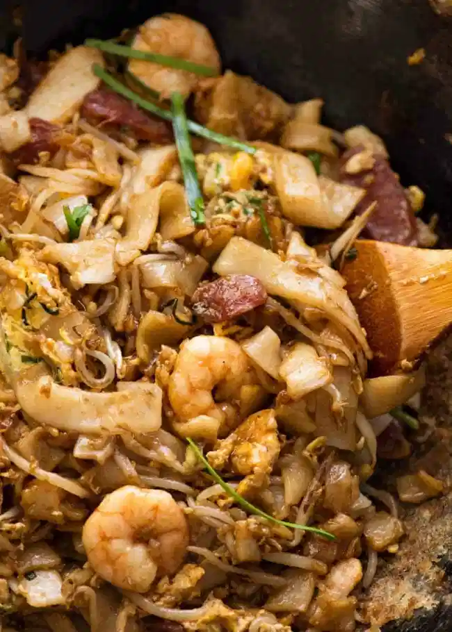

Char Kway Teow

Description
One of the most epic noodle dishes in the world from the streets of Malaysia: Char Kway Teow! Big flavours, contrasting textures and the signature hint of charred smokiness, this is bold South East Asian food at its best!
What may seem to be quite a straightforward stir fried noodle dish is actually a bit of an art that’s been perfected by Malaysian street hawkers, and it’s taken me this long to share the recipe because I wanted to ensure I could make it doable for anyone.
Serves 2-3
Ingredients
- 500 g / 1 lb fresh wide rice noodle
- 2 tbsp lard , or vegetable oil
- 2 tbsp vegetable oil , separated
- 10 small prawns/shrimp , shelled and deveined
- 2 garlic cloves , finely chopped
- 1 Chinese sausage / Lup Chong Sausage , sliced thinly on the diagonal
- 5 cm / 2" piece of fried fish cake , sliced thinly
- 20 stems garlic chives , cut into 4 pieces
- 2 1/2 cups bean sprouts
- 2 eggs , whisked
Sauce:
- 5 tsp dark soy sauce
- 4 tsp light soy
- 2 tsp oyster sauce
- 4 tsp kecap manis / sweet soy sauce
Steps
- Mix Sauce Together
Noodles
- Do not attempt to pull noodles apart while cold and hard - they break.
- Place whole packet in microwave, heat on high for 1 1/2 minutes - 2 minutes until warm and pliable, not hot, turning packet over as needed.
- Handle carefully and measure out 500g/1 lb noodles into a heatproof bowl. Separate noodles stuck together.
- If noodles become cold and brittle before cooking, cover with cling wrap and microwave for 30 seconds to make warm (not hot, just warm) to reduce breakage.
Cooking
- Heat 1 tbsp oil in a large non stick skillet over high heat.
- When heated, add shrimp and cook for 1 1/2 minutes until just cooked through, then remove into bowl
- Add Chinese sausage and fish cake, and cook for 1 minute until sausage is caramelised, then add to bowl.
- Add 1 tbsp oil then add egg and cook, pushing in the edges to make a thick omelette. Once set, chop it up roughly using a wooden spoon (see video), then add to bowl.
- Add bean sprouts and cook for about 1 minute until just starting to wilt, then add to bowl.
- Add lard. Once melted and starting to smoke, add garlic then immediately add noodles. Fold gently 4 times using a spatula + wooden spoon (see video) just to disperse oil through noodles.
- Tip all the other ingredients back in plus the chives. Fold gently twice, then pour all the Sauce over.
- Gently toss 4 to 6 times to disperse the sauce, pausing in between to allow the noodles to have a chance to caramelise on the edges a bit.
- Remove from stove and serve immediately.